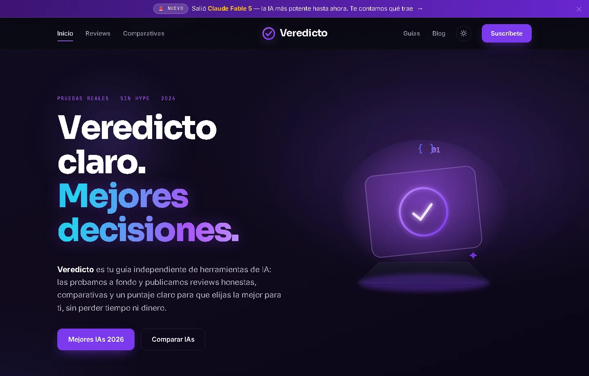

Veredicto IA
Proyecto propio · Plataforma de IA
Detrás del proyecto
Ayudar a elegir entre herramientas.
Una plataforma para descubrir herramientas de IA, leer reviews y comparar opciones según lo que necesitas hacer.
Visitar Veredicto IADe explorar a comparar.
Las categorías organizan la búsqueda por uso. Las fichas reúnen la información de cada herramienta y las comparativas permiten revisar alternativas en conjunto.
Una estructura que puede crecer.
El proyecto conecta categorías, fichas, guías y comparativas. La navegación mantiene esas entradas visibles para que cada lectura tenga un siguiente paso.
Explorar comparativas